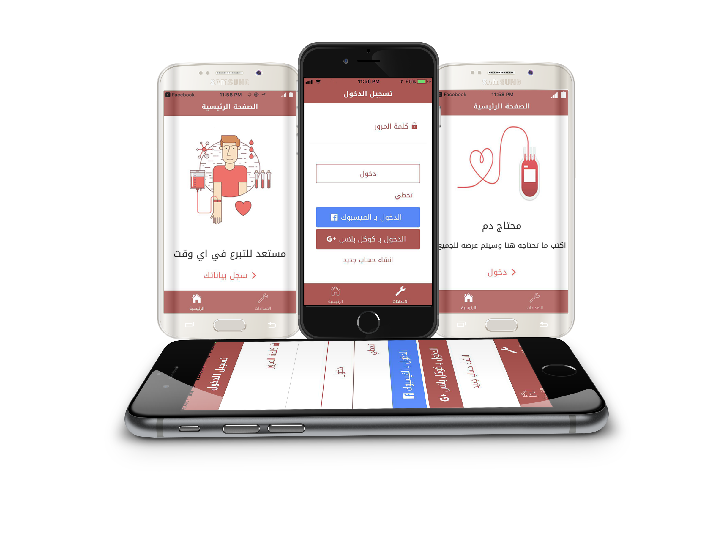

شرح التطبيق
هو تطبيق لمساعدة الناس الذين هم بحاجه الى متبرع بالدم على نحو اضطراري او مستعجل.
فأذا كنت احد المحتاجين لفصيلة دم معينة او نادرة الحصول في اي وقت ، يمكنك ان تسجل طلبك وبسهولة
بالغة وسوف يساعدك التطبيق على ايجاد الشخص المناسب الـذي يـحمل نـفس الفصيـلة الـمطلوبـة او ارسـال
طلب اشعار طارئ لجميع المتبرعين المستعدين للتبرع بالدم.
يتيح التطبيق ايضا التسجيل كمتبرع ، من اجـل ان تكـون انت احد المتـبرعيـن بـالدم مـن اجـل مساعــدة الاخـرين
الذين هم بحاجه لمساعدتك.
معلومات الاتصال
يمكنك زيارة الموقع التالي لمزيد من المعلومات:
Code for Iraq
المطورين
قام فريق البرمجة من اجل العراق / البصرة بانشاء هذا التطبيق للخدمة الإنسانية وتقديم أبسط وسيلة لمساعدة الناس المحتاجين.
- برمجة وتصميم الموقع
بثينة عباس
يوسف عبداللطيف
- الاشراف على التنفيذ
هبة عبد الستار
مروان سعد
- تصميم الآيقونات والثيمات
عمار مرتضى
,
التبرع بالدم
هو سحب كمية من دم المتبرع تقدر بنحو (450 مل) أي بنسبة (8%) من دم الإنسان الطبيعي. وهذه العملية تستغرق أقل من ربع ساعة، وهي مهمة لتلبية الحاجة المستمرة للدم.
فصائل الدم:
- فصيلة الدم O : تُسمّى فصيلة الدم O بفصيلة الدم الكريم، وذلك لأنها لا تحتوي على أية أجسام مضادة، ممّا يجعلها مقبولةً من قبل جميع فصائل الدم؛ حيث يمكن لحامل هذه الفصيلة أن يمنح دمه للفصائل الأخرى، لكنه لا يأخذ إلا من نفس فصيلته، وتعتبر نقاط القوة لمن يحملون هذه الفصيلة في أنّهم يتمتّعون بجهاز هضمي قويّ وله قدرة كبيرة على الاحتمال، كما أنّ جهاز مناعتهم نشيط جداً وكفاءته عالية، لكن التغيير في نظامهم الغذائي لا يناسبهم كثيراً، ولا يتأقلمون بشكلٍ تام مع بيئته المتغيرة، ومن شدة نشاط جهاز المناعة أحياناً يهاجم نفسه. يُناسبهم الطعام الذي يحتوي على البروتينات الحيوانية، مثل: اللحوم الحمراء، والسمك، وكذلك الخضروات والفواكه، والبقوليات، والقمح، والملفوف بجميع أنواعه.
-
فصيلة الدم A : فصيلة الدم هذه صالحة للتبرّع لفصيلة الدم المماثلة لها، وفصيلة الدم ABB، وما يُميّز حاملو هذه الفصيلة أنّهم يتأقلمون بشكلٍ جيدٍ مع جميع التغيرات الحاصلة في نمط غذائهم وبيئتهم، وعملية الأيض لديهم سريعة جداً، لكن جهازهم الهضمي حساس جداً، وجهاز المناعة لديهم ضعيف نوعاً ما، ويكون عرضة لأي عدوى ميكروبية، يناسبهم الطعام النباتي، مثل: الخضروات، والتوفو، والبقوليات، والمأكولات البحرية بشكلٍ عام، ويفضّل أن يتجنبوا الألبان ومشتقاتها، واللحوم الحمراء والقمح.
- فئة الدم B : هي صالحة للتبرّع لفصيلة الدم المماثلة لها، وفصيلة الدم ABB، وما يُميّز حاملو هذه الفصيلة بأن جهاز مناعتهم قوي، ولديهم قدرة على التأقلم مع المتغيرات، سواءً كانت الغذائية أم البيئية، ولديهم جهاز عصبي متوازن، وتناسبهم جميع أنواع الطعام إذا تمّ تناولها دون إفراط، وجميع اللحوم باستثناء الدجاج. يُناسبهم الحليب ومشتقاته، والبقوليات، والخضروات، والفواكه.
- فئة الدم AB : هذه الفصيلة تستقبل جميع أنواع الدم دون استثناء، لكنّها لا تمنح إلّا نفس فصيلتها، ويطلق عامة الناس على هذه الفصيلة اسم فصيلة دم البخيل، وحاملو هذه الفصيلة لديهم جهاز مناعة ضعيف جداً، يَسمح بدخول الميكروبات الحاملة لمولّدات الضد الشبيهة بمولدات الضد الخاصة بفصائل الدم A وB، ونظامهم الغذائي الخاص خليط ما بين نظام فصيلة الدم A وفصيلة الدم B.
فوائد التبرع بالدم:
- اهمية التبرع بالدم تكمن بتنشيط الدورة الدموية, حيث يتم تنشيط نخاع العظم لإنتاج خلايا الدم المختلفة بعد التبرع بالدم.
- التقليل من احتمال الإصابة بأمراض القلب وانسداد الشرايين، لأن من فوائد التبرع بالدم أنه يقلل نسبة الحديد في الدم والتي ثبت علمياً أن زيادة نسبة الحديد تزيد من نسبة الإصابة من هذه الأمراض.
- عند التبرع بالدم يتم التأكد من سلامة المتبرع، وذلك بإجراء الكشف الطبي عليه من قبل طبيب بنك الدم.
- يتم التأكد قبل عملية التبرع بالدم في بنك الدم من خلو المتبرع من الأمراض المعدية، التي تنتقل عن طريق الدم مثل أمراض نقص المناعة المكتسبة (الايدز) و التهابات الكبد الفيروسية من نوع (ب، ج) والزهري والملاريا، وذلك بعد إجراء الفحوصات المخبرية.
- الشعور بالراحة النفسية لما يقوم به المتبرع من عمل جليل لما فيه من أجر وثواب.
شروط التبرع بالدم:
- لا بد أن يراوح عمر المتبرع عند التبرع بالدم بين 18 و 65 سنة.
- يجب أن لا يقل وزن المتبرع عن 50 كجم.
- يجب أن تكون نسبة الهيموجلوبين للرجال 13–17.5، أما النساء فتكون 12.5–14.5.
- يجب أن يتراوح الضغط بين 100/60 إلى 140/90.
- يجب أن يتراوح النبض بين 50 و100 في الدقيقة.
- يجب أن لا تزيد درجة الحرارة عن 37 درجة مئوية.
موانع التبرع بالدم:
- يمنع التبرع بالدم للشخص الذي أجريت له عملية نقل دم، أو أحد مكوناته، أو أجريت له عملية جراحية لفترة أقل من اثني عشر شهراً.
- يمنع التبرع بالدم لشخص مصاب بأحد الأمراض المعدية، التي ثبت أنها تنقل عن طريق نقل الدم الملوث بجرثومة المرض، كالايدز أوالالتهاب الكبدي الفيروسي والزهري والملاريا...الخ.
- يمنع التبرع بالدم لشخص مصاب بأحد الأمراض المزمنة، كالسرطان والقلب والصرع، وكذلك الشخص المصاب بالسكري الذي يحتاج إلى الأنسولين في علاجه.
- يمنع التبرع بالدم لشخص مصاب بأحد أمراض الدم كفقر الدم والثلاسيميا ...الخ. كذلك المصاب بأمراض الحساسية، كالربو أو الحساسية من الأدوية.
قريباً . . .